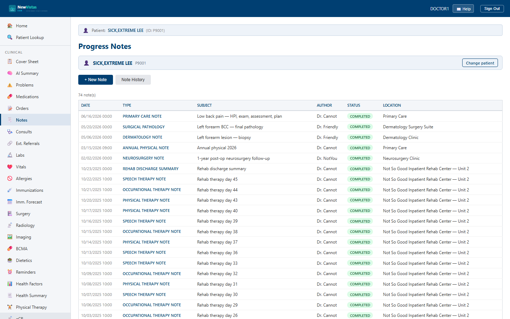

Progress Notes
The Progress Notes screen is where you read, write, and sign the patient's TIU documents — progress notes, discharge summaries, consult notes, and more. It is the equivalent of the CPRS Notes tab.
Open Progress Notes
- In the sidebar, click Progress Notes (or go to
/notes). - If a patient is already in context, their notes load automatically. Otherwise, in the patient bar type the patient ID (e.g.
P9001) and click Load.

What you see
The notes list
The body is a table of the patient's notes. Each row shows Date, Type, Subject, Author, Status, and Location. Click any row to open the full note in a detail view.
- Status badges flag where a note stands — UNSIGNED / UNCOSIGNED in amber, COMPLETED in green.
- A
[+]next to the subject means the note has addenda. - Note History opens a date-range search for older notes.
Writing a new note
Click + New Note to open the form. Choose the Document Type (Progress Note, Discharge Summary, Consult Note, Surgical Note, Crisis Note, Advance Directive), add a Subject, confirm the Author, set the Location, type the Note Text, and click Save Note.
Signing a note
Open a note to see its detail. An UNSIGNED note shows a Sign button; an UNCOSIGNED note shows Cosign. Either opens the electronic-signature dialog, where you enter your Signer ID and electronic signature code to complete it.
Suggest ICD-10 codes from a note
On any note's detail view, Suggest ICD-10 codes reads the note and offers candidate codes. Every suggestion shows the verbatim sentence it came from — a candidate whose sentence is not actually in the note is never offered — and the code itself always comes from the site's own ICD-10 index, never from a model, so a made-up code cannot appear.
- A statement about a relative ("my mother had osteoporosis") is offered as the family-history code (Z82.62), never as the patient's own diagnosis.
- A past condition ("history of melanoma") is offered as the personal-history code (Z85.820), never as active cancer.
- A denied symptom ("no chest pain") is shown as an informative negative, badged denied in note — it can never be added as a problem.
Add as problem (Unconfirmed) files the code on the problem list at Unconfirmed certainty, citing the note and the quoted sentence, and permanently marked machine-suggested — so it can never masquerade as a clinician's own confirmed assertion. It opens a diagnostic episode you can adjudicate later like any other.